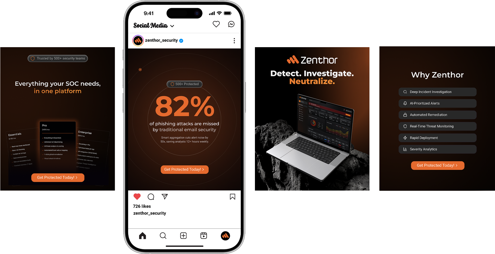

Alert Triage & Prioritization
Test scenarioAssess the user’s ability to identify the most critical phishing threat from an aggregated alert feed, relying on visual risk scoring rather than chronological order.
What we measuredTime on Task (speed of pinpointing the critical threat) and Accuracy (distinguishing real threats from false positives).
16 / Social
Social media
